主なフローについて
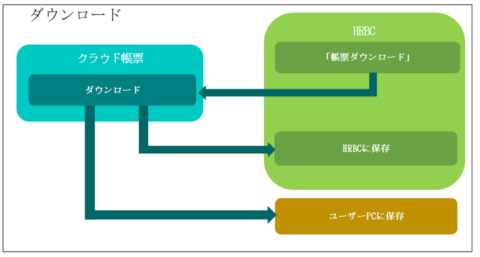
ダウンロード（管理者/一般ユーザー共通で利用可能）
作成した帳票テンプレートをユーザーPCかHRBCにダウンロードします。
ダウンロードは、「HRBCから出力したい成約IDの画面から出力する方法」と「クラウド帳票
「2．クラウド帳票から成約IDを入力してダウンロードする」でご確認ください。
クラウド帳票のログインについて
初回の設定を行う上で、クラウド帳票の画面は一度HRBCを経由してログインする必要が
あります。
ログインの手順は「1－1.クラウド帳票を1件ダウンロードする(1)～(3)」、
「1－2.クラウド帳票を一括ダウンロードする (1)～(3)」と同様となります。
1－1.クラウド帳票を1件ダウンロードする
(1) HRBC画面左上のタブで「成約」を選択し、ドロップダウンから「すべての成約」を
選択すると「成約一覧」が表示されます。
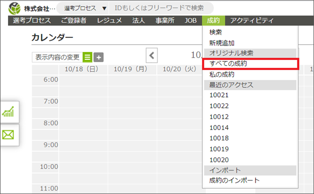
(2) クラウド帳票を作成したいHRBCデータのIDをクリックします。
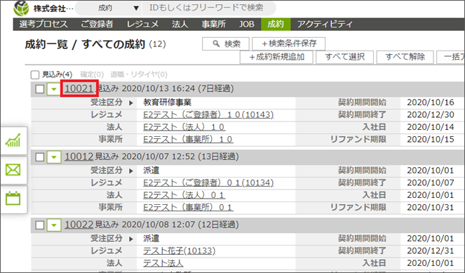
(3) 左上のタブで「帳票をダウンロードする」を選択し、ダウンロード画面に切り替えます。
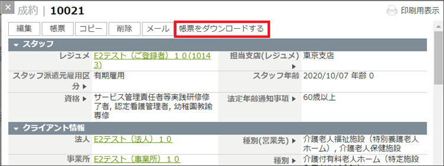
(4) ダウンロード画面のSales ID欄に表示されているIDが正しいことを確認し、
テンプレートのドロップダウンから利用したいテンプレート名称を選択します。
(5)「ダウンロードする」ボタンを押すと、帳票ダウンロード画面に切り替わります。
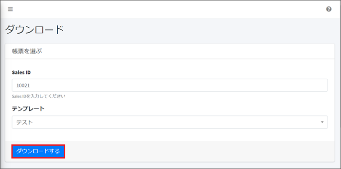
① アクション＝「ダウンロードする」の場合
(1)「ダウンロードする」の右側にあるEXCEL/PDFのボタンを押します。
(2) 画面左下に表示されるブラウザのダウンロードバーをクリックするとダウンロード
したEXCEL/PDFファイルが確認できます。
(3) PCのダウンロードフォルダにEXCEL/PDFファイルが保存されます。
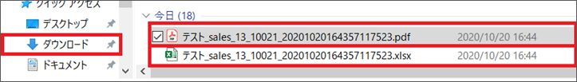
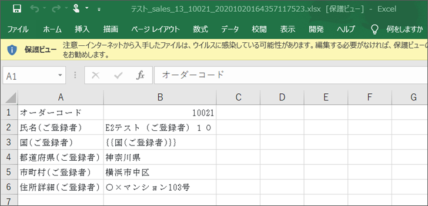
▲ Excelで出力したファイル
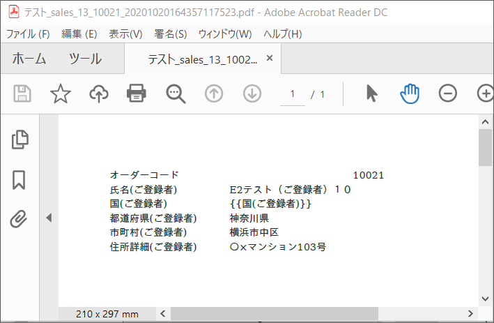
▲ PDFで出力したファイル
②アクション＝ 「HRBCに保存する」の場合
(1)「HRBCに保存する」の右側にあるEXCEL/PDFのボタンを押します。
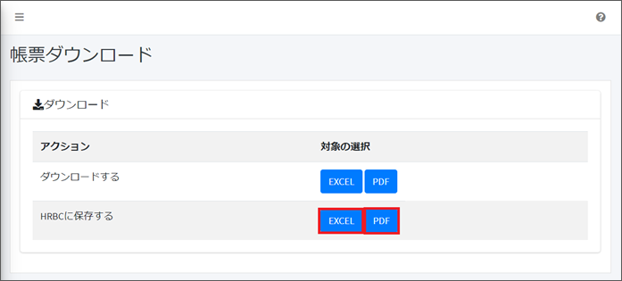
(2) 上部に「HRBCにファイルを添付しました。」という緑色の帯が表示されたら
「HRBCを開く」をクリックします。
(3) HRBC画面に切り替わり、「成約」ウィンドウが表示されます。
「サブリスト｜ 添付ファイル」でダウンロードしたEXCEL/PDFファイルが確認できます。
1－2.クラウド帳票を一括ダウンロードする
(1) HRBC画面左上のタブで「成約」を選択し、ドロップダウンから「すべての成約」を選択する
と「成約一覧」が表示されます。

(2) 成約一覧 右上の「一括アクション」のドロップダウンから「帳票を一括ダウンロードする」
を選択します。
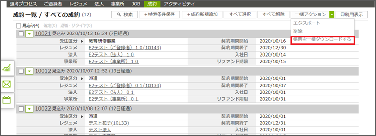
※すべてのデータではなく、選択したデータのみのクラウド帳票を出したい場合は
(3) データの選択ウィンドウで「OK」を押すと一括ダウンロード画面に切り替わります。
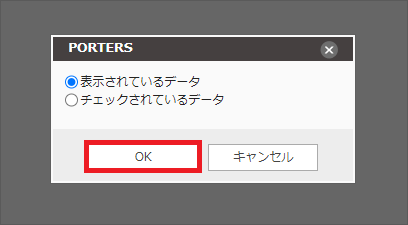
※すべてのデータではなく、選択したデータのみのクラウド帳票を出したい場合は
ラジオボタンを「チェックされているデータ」に変更してから「OK」を押します。）
(4) Sales ID欄に表示されているIDが正しいことを確認し、テンプレートのドロップダウン
から利用したいテンプレート名称を選択します。
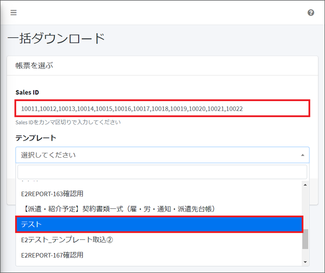
(5) 「ダウンロードする」ボタンを押すと、一括ダウンロード出力画面に切り替わります。
(6) 出力したいデータのファイル欄にある「ダウンロードする」を押すと、
帳票ダウンロード画面に切り替わります。
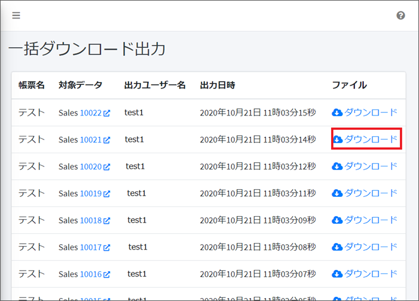
① アクション＝「ダウンロードする」の場合
(1)「ダウンロードする」の右側にあるEXCEL/PDFのボタンを押します。
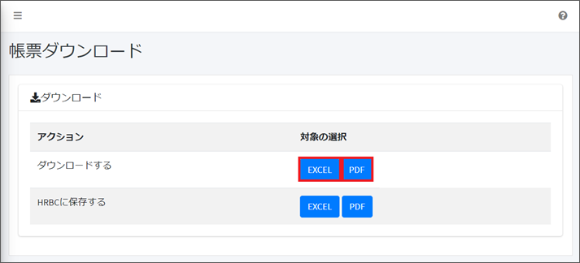
(2) 画面左下に表示されるブラウザのダウンロードバーをクリックするとダウンロード
したEXCEL/PDFファイルが確認できます。
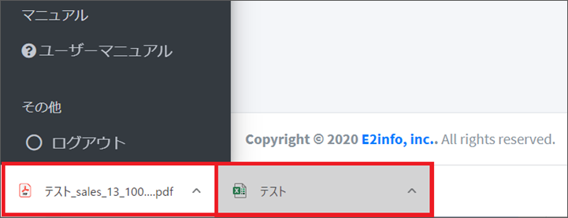
(3) PCのダウンロードフォルダにEXCEL/PDFファイルが保存されます。
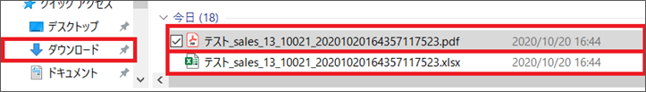
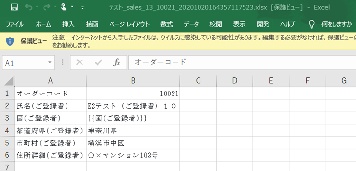
▲ Excelで出力したファイル
▲ PDFで出力したファイル
②アクション＝ 「HRBCに保存する」の場合
(1)「HRBCに保存する」の右側にあるEXCEL/PDFのボタンを押します。

(2) 上部に「HRBCにファイルを添付しました。」という緑色の帯が表示されたら
「HRBCを開く」をクリックします。
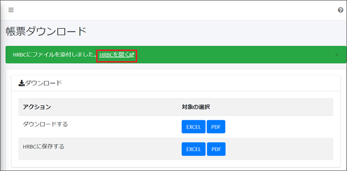
(3) HRBC画面に切り替わり、「成約」ウィンドウが表示されます。
「サブリスト｜ 添付ファイル」でダウンロードしたEXCEL/PDFファイルが確認できます。
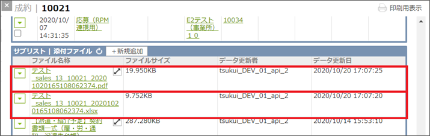
2－1.「ダウンロード」からクラウド帳票を出力する
(1)「ダウンロード」を選択し、Sales ID欄に成約IDを入力します。
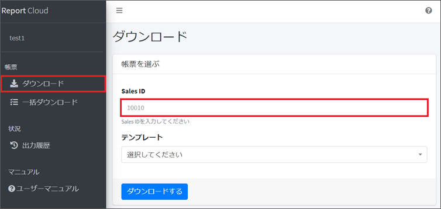
(2) 以降の操作は「1－1.クラウド帳票を1件ダウンロードする(4)」をご参照ください。
2－2.「一括ダウンロード」からクラウド帳票を出力する
(1)「一括ダウンロード」を選択し、Sales ID欄に成約IDを入力します。
複数入力する場合、成約IDの間に「,(カンマ)」で区切ります。
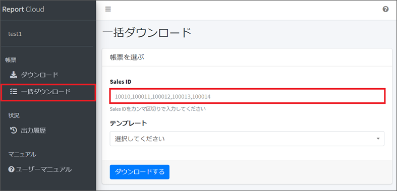
(2) 以降の操作は「1－2.クラウド帳票を一括ダウンロードする(4)」をご参照ください。
2－3.「出力履歴」からクラウド帳票を出力する
「出力履歴」では、過去に出力したクラウド帳票の履歴を確認し、再出力できます。
(1)「出力履歴」を選択し、右側の「対象データ」にあるIDを押下します。
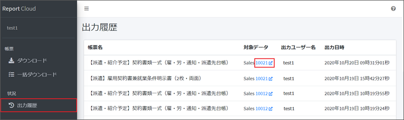
(2) 別ウィンドウでHRBCの「成約一覧」が表示されます。
左上のタブで「帳票をダウンロードする」を選択し、ダウンロード画面に切り替えます。
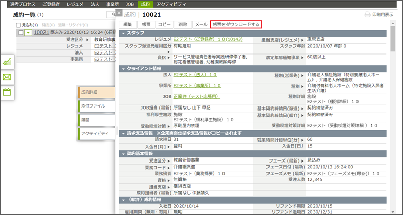
(3) 以降の操作は「1－1.クラウド帳票をダウンロードする(4)」をご参照ください。
株式会社イーツー・インフォ
2020/10/23更新
以上